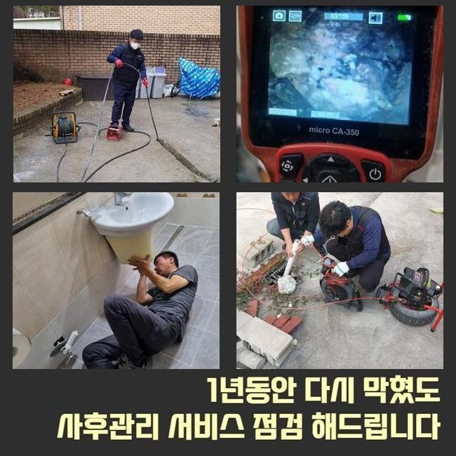
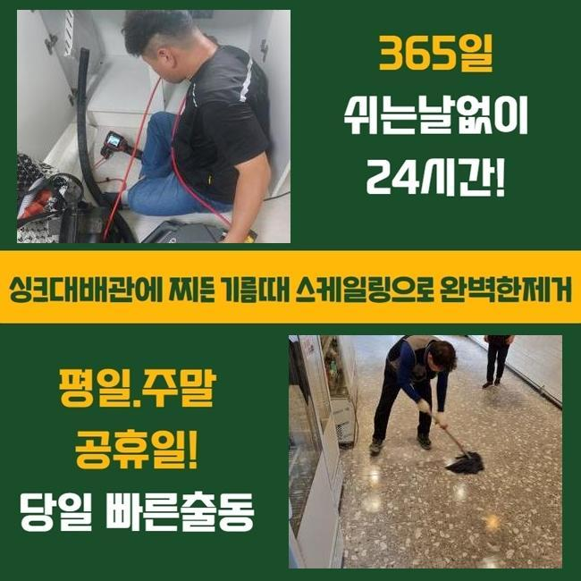
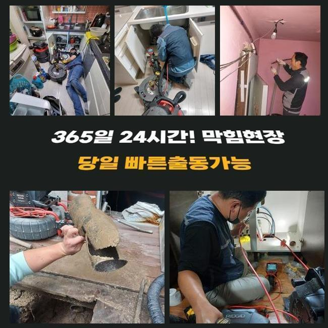
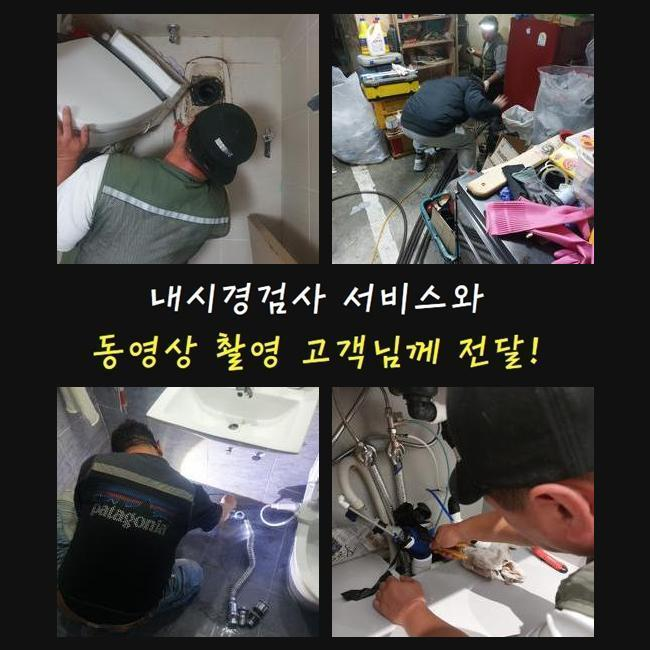
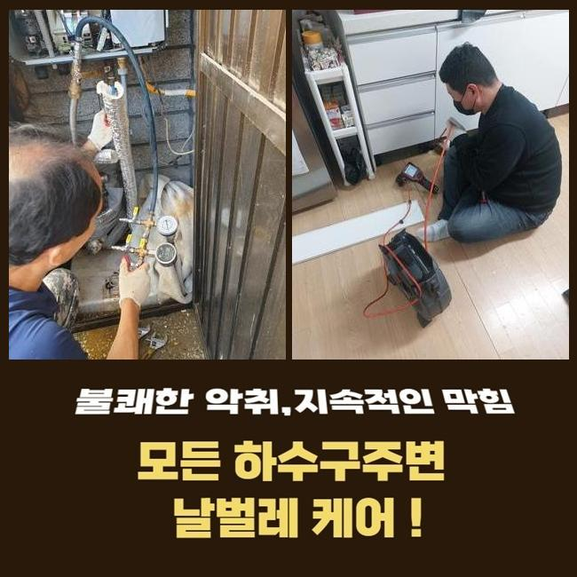
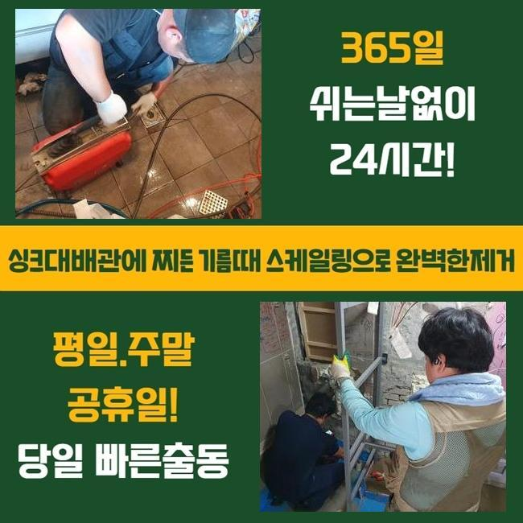

🏠 이천 증포동대변기뚫음 모가면 하수구뚫어주는곳 통수전문
서울 동작구 싱크대막힘 전문 시공 후기

📋 작업 개요
- 위치: 서울 동작구, 동작구, 서울
- 서비스 유형: 싱크대막힘, 변기막힘, 하수구막힘, 배관막힘, 뚫는업체, 배관청소, 고압세척
- 작업 일시: 2025. 4. 3. 11:33
- 업체명: 하수구수사대 (010-5615-2118)
🔍 문제 상황
동작구 아파트고압세척 관악구 싱크대뚫는곳
배수 문제들을 시정하려면 실시되야 하는것이라면 각 구간의 꾸준한 청소인데요
각 관로로 잔여물질이 빠지지않게끔 유의하며 이를 위하여 노력하는게 중요하겠습니다
아파트 등의 올수리 단계 중에도 하수라인들을 진단해보고 해당 증상을 처리해주는게 1순위입니다
의뢰인의 불편사항을 들은 후에 조리공간에서 야기된 기름기들로 인한 막힘 결함을 예방하기 위하여 작업에 착수했죠
조리가 끝나고 오일류들이 흐르며 하수관의 벽면에 축적되어 뒤엉켜 통수불가가 야기된 상황이었습니다
저희업체는 석션장치로 입구쪽의 하수들을 청소한 뒤 흡착물들도 제거시키고자 샤프트장비를 운용시켜 배수구를 청소해주었는데요
이것으로 부유물과 냄새이슈는 잠재웠어요
개수대에 오수들과 식재료의 잔해를 없애고 배수통에서부터 이어진 주름진 호스 내부와 바닥 배수구를 관찰하였으나 이상증세는 없었습니다
이후에 내측까지 살필 목적으로 내시경장치를 써서주었습니다

🔎 원인 분석
💡 전문가 진단: 정밀 진단 장비를 사용하여 슬러지의 고착 여부를 판명하고 타격/세척 작업을 실시했습니다.
내시경장치로 관찰하니 입구라인엔 이상징후가 보이질 않았으나 2m 이하 부근 벽부분을 시작으로 하여 기름성분이 관찰됐습니다
계속해서 확인하니 수직배관 라인에서 바닥부근을 막고 있는 잔여물들을 발견했는데요
슬러지뭉치가 통로를 좁혀 문제들이 야기된 것으로 생각되었죠
그 다음으로는 안정적인 해결방법을 모색해야했죠
잔여물질이 흡착됨과 동시에 바닥부근을 막는 문제에서는 샤프트장비를 운용시켜 기름때들을 타겟으로 해 청소해주었어요
그리고 4미터 라인에서는 노커의 회전력을 가용하여 슬러지들을 조각내어 제거시켰는데요
일반적으로 구매가능한 석션과 같은 간소하게 풀어내는 도구들로는 효과가 미비할 수 밖에 없으므로 전문적인 장치가 필요 시 되는 작업들로 이상없이 마무리 되었고 깊숙한 지점까지 깨끗히 정리했습니다
이렇듯 각 라인의 신속한 배출이 복구되어 각 설비의 기능들을 지켜냈습니다
주방쪽의 문제들을 얼추 처리한 후 밖의 매립배관들도 확인해야했습니다
외부에 설치된 하수관에도 대량의 오염물들이 누적된 탓에 청소가 힘들거라 생각했어요

🔧 작업 과정
물호스를 연결하여 하수라인들을 흡입하고 잔해물질을 석션기로 배출시켰어요
내시경기기로 관로 속을 체크해보니 고착화 현상이 이미 진행되었죠
해당 문제는 특정 구간의 흐름들을 막아서기에 각 라인의 훼손 이슈를 불러일으킬 가능성이 있어요
하수관에 파손문제가 생겨난다거나 하수관이 훼손되면 교체까지도 생각해야해요
의뢰자에게 석션과 같은 도구들보단 고압세척기기의 통한 작업을 추천하였고 이전과의 차이와 수리의 방향성까지 일러드렸어요
의뢰인분도 각 구간의 컨디션을 무겁게 생각하시어 고수압의 방식으로 진행시키기를 바라셨기에 해당 절차를 진행하기로 결정되었어요
외부 관로 속을 청소하여 오염물을 제거해야만 했는데요
흐름이 느려진것은 하수도에 증세들이 있을 수 있으므로 검수가 요구됩니다
작업들을 이행할 때 생겨난 이물의 경우 제거가 필요하고 이물들이 하수도로 빠지지않게끔 조심해야하죠
곧장 고수압의 기계들을 써서 흡착된 이물들과 기름때들을 제거시켰죠
심각했던 오류였던 탓에 만만치않은 작업이라 생각했지만 변수없이 원활하게 진행하여 시간과 비용을 단축해냈어요
고압수관리들을 마무리하고서 재차 내시경카메라로 혹시 모를 잔존 오염원이 있는지 확인까지 깨끗히 이행해주었답니다
통수가 안되는 사안을 예방하려면 주기성을 갖추어 점검을 실시 해주는것이 좋은데요
향후를 위하여 관리하는것에 그리고 신경 써야 합니다
이런 내용들을 준수하면 나중에 배관의 안정성을 지켜내는게 가능해요
끝으로 스케일링 장비를 쓰고난 후 잔해물질과 같이 비위생적이였던 상태들도 마무리까지 해주었는데요


✅ 작업 완료
각 관로가 막힌 문제에서는 스스로 예방하기 위하여 넷상으로 찾아보시는 방안도 도움됩니다
하지만 현재의 증세와 같이 영업장등에서 간소하게 개선이 없으면 전문인들에게 상담해볼것을 염두에 두어야 해요
배수가 안되는 문제들의 경우 해당 시기에 해결을 미룬다면 걷잡을 수 없는 증상도 동반시키게 됩니다
그 후로 빠르고 해결과 직결되있는 대처들이 필요하겠습니다
배수장애가 생겼다면 전화 주시면 되겠습니다 안정성을 바탕으로 의뢰자의 피해를 해소하겠습니다




⚠️ 주방 싱크대 배관 막힘 예방 수칙
- ✅ 기름기가 묻은 식기나 프라이팬은 설거지 전 키친타올로 반드시 기름때를 닦아내세요.
- ✅ 주기적으로 싱크대 개수대에 뜨거운 물을 가득 받아 한 번에 내려 배관 내부 기름을 씻어내세요.
- ✅ 배수구 거름망을 미세한 필터로 사용하시고 음식물 찌꺼기가 틈으로 새어 들지 않게 관리하세요.
- ✅ 베이킹소다와 식초를 뜨거운 물과 함께 일주일에 한 번씩 부어주면 배관 살균과 막힘 예방에 좋습니다.
💡 핵심 정리
- 확실한 장비 작업(내시경 점검 및 샤프트 스케일링)으로 원인을 뿌리 뽑습니다.
- 작업 후 1년 이내에 동일한 부위 재발 시 100% 무상 A/S 서비스를 보장합니다.
- 서울 · 경기 · 인천 전 지역에 24시간 언제든 긴급 출동할 수 있도록 항시 대기 중입니다.
❓ 자주 묻는 질문 (FAQ)
🚨 서울 동작구 싱크대막힘 문제로 고민이신가요?
정확한 원인 진단과 확실한 시공으로 재발 없는 해결을 약속드립니다.
24시간 긴급 출동 | 서울 · 경기 · 인천 전지역 | 1년 내 재발 시 무상 A/S